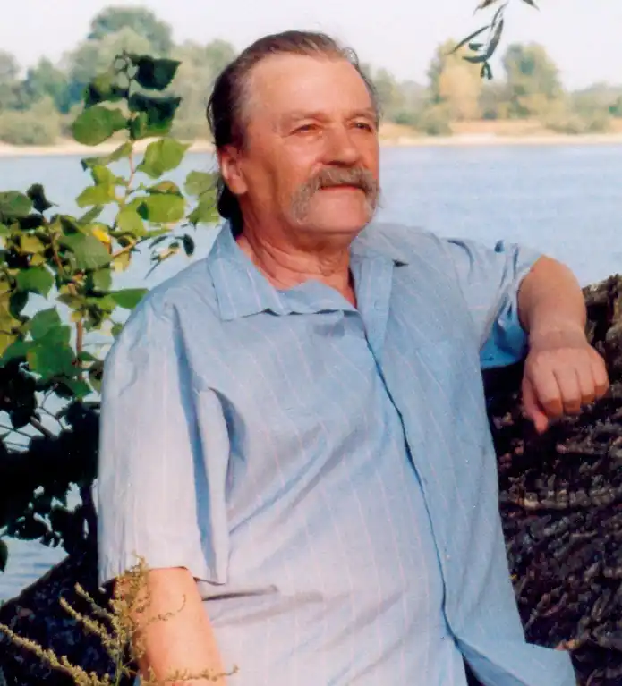
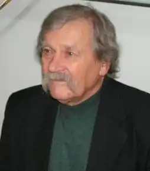

Чередниченко Дмитро Семенович народився 30 листопада 1935 року в с. Межиріч, Канівський район, Черкаська область — український письменник, поет, літературний редактор, педагог, мистецтвознавець. Член Національної спілки письменників України (1979). Перекладач литовської літератури.
Після закінчення Межиріцької середньої школи (1953) закінчив Київський педагогічний інститут імені М. О. Горького (1957), вчителював на Канівщині й Васильківщині (1957—1963), працював на журналістській та видавничій роботі (1963—1982).
Яскравий представник "тихої лірики". Учасник діалектологічної експедиції в село Салтикову-Дівицю Куликівського району Чернігівської області (керівник Ф. Т. Жилко, 1955) та першої української антропологічної експедиції по Україні, Молдові, Білорусі та Росії (керівник В. Д. Дяченко, 1956), а також міжнародних конференцій з питань національної символіки, літератури й мистецтва. З 1991 по 2002 редагував українознавчий часопис для українського шкільництва "Жива вода". З лютого 1992 року керує літературним об'єднанням "Радосинь". Помер 20 серпня 2021 року на вісімдесят шостому році життя. (Про це у Facebook повідомила його дочка, письменниця Оляна Рута). Автор поетичних книжок: "Отава" (1966), "Межиріч" (1974), "Золоті струни" (1981), "Сад" (1983), "Рось" (1985), "Доброю любов'ю" (1986), "Неопалима колиска" (трилогія, 1987), "Брама" (1991), "Родень" (1995), "Наші стежки додому" (2000), "Батиха" (2002), "Нáвистка" (2004), "П'ятерик" (2005), Автор науково-популярного видання "Павло Чубинський" (2005); книжок для дітей: "Щедринець" (1968), "Чебрики" (1970), "Білий Чаїч" (1973), "Мандри Жолудя" (1973), "У країні майстрів" (1974), "Ковзанка" (1978), "Ми будуємо дім" (1980), "Жар-півень" (1985), "Священна діброва" (1995), "Гарна моя казочка?" (1998), "Доторки" ISBN 9780463151679 (2018).